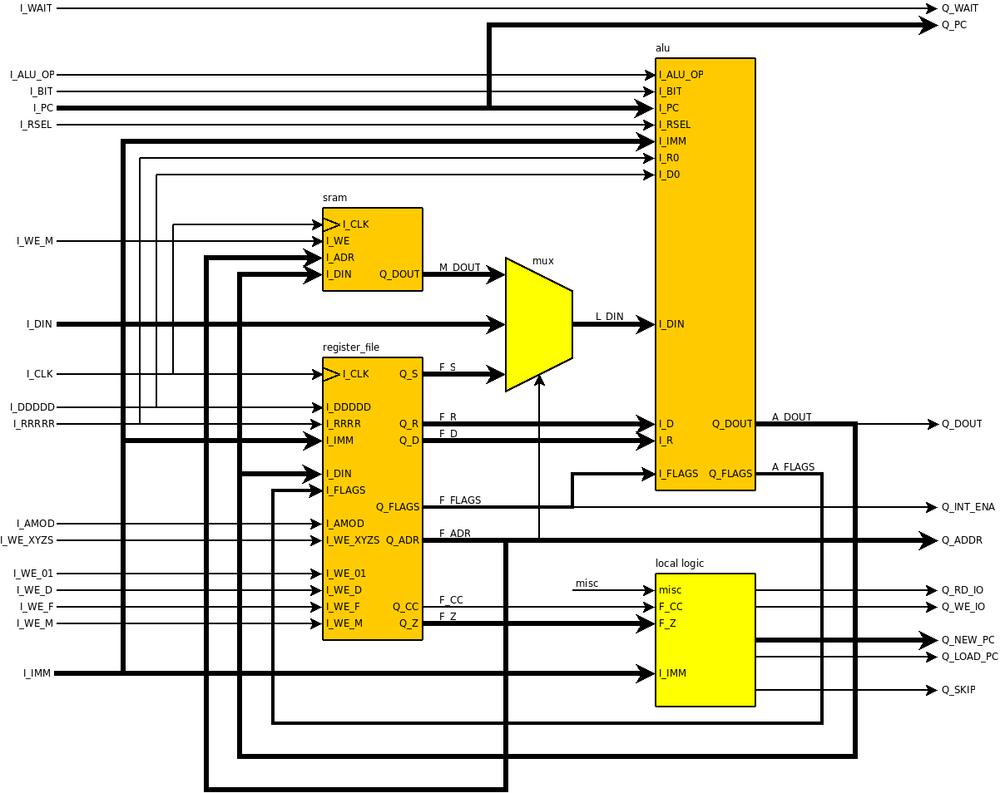
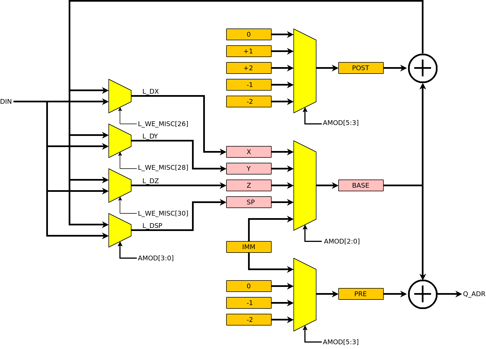

| Previous Lesson | Table of Content | Next Lesson |
|---|
In this lesson we will describe the data path of the CPU. We discuss the basic elements of the data path, but without reference to particular instructions. The implementation of instructions will be discussed in the next lesson. In this lesson we are more interested in the capabilities of the data path.
The data path consists of 3 major components: a register file, an ALU (arithmetic/logic unit), and the data memory:

The AVR CPU has 32 general purpose 8-bit registers. Most opcodes use individual 8-bit registers, but some that use a pair of registers. The first register of a register pair is always an even register, while the other register of a pair is the next higher odd register. Instead of using 32 8-bit registers, we use 16 16-bit register pairs. Each register pair consists of two 8-bit registers.
A single register pair is defined as:
32 entity reg_16 is 33 port ( I_CLK : in std_logic; 34 35 I_D : in std_logic_vector (15 downto 0); 36 I_WE : in std_logic_vector ( 1 downto 0); 37 38 Q : out std_logic_vector (15 downto 0)); 39 end reg_16;reg_16.vhd
The Q output provides the current value of the register pair. There is no need for a read strobe, because (unlike I/O devices) reading the current value of a register pair has no side effects.
The register pair can be written by setting one or both bits of the WE input. If both bits are set then the all 16 bits of D are written; the low byte to the even register and the higher byte to the odd register of the pair. If only one bit is set then the register corresponding then the bit set in WE defines the register to be written (even bit = even register, odd bit = odd register) and the value to be written is in the lower byte of DIN:
46 process(I_CLK) 47 begin 48 if (rising_edge(I_CLK)) then 49 if (I_WE(1) = '1') then 50 L(15 downto 8) <= I_D(15 downto 8); 51 end if; 52 if (I_WE(0) = '1') then 53 L( 7 downto 0) <= I_D( 7 downto 0); 54 end if; 55 end if; 56 end process;src/reg_16.vhd
The status register is an 8-bit register. This register can be updated by writing to address 0x5F. Primarily it is updated, however, as a side effect of the execution of ALU operations. If, for example, an arithmetic/logic instruction produces a result of 0, then the zero flag (the second bit in the status register) is set. An arithmetic overflow in an ADD instruction causes the carry bit to be set, and so on. The status register is declared as:
32 entity status_reg is 33 port ( I_CLK : in std_logic; 34 35 I_COND : in std_logic_vector ( 3 downto 0); 36 I_DIN : in std_logic_vector ( 7 downto 0); 37 I_FLAGS : in std_logic_vector ( 7 downto 0); 38 I_WE_F : in std_logic; 39 I_WE_SR : in std_logic; 40 41 Q : out std_logic_vector ( 7 downto 0); 42 Q_CC : out std_logic); 43 end status_reg;src/status_reg.vhd
If WE_FLAGS is '1' then the status register is updated as a result of an ALU operation; the new value of the status register is provided on the FLAGS input which comes from the ALU.
If WE_SR is '1' then the status register is updated as a result of an I/O write operation (like OUT or STS); the new value of the status register is provided on the DIN input.
The output Q of the status register holds the current value of the register. In addition there is a CC output that is '1' when the condition indicated by the COND input is fulfilled. This is used for conditional branch instructions. COND comes directly from the opcode for a branch instruction (bit 10 of the opcode for the "polarity" and bits 2-0 of the opcode for the bit of the status register that is being tested).
The register file consists of 16 general purpose register pairs r00 to r30, a stack pointer sp, and an 8-bit status register sr:
131 r00: reg_16 port map(I_CLK => I_CLK, I_WE => L_WE( 1 downto 0), I_D => I_DIN, Q => R_R00); 132 r02: reg_16 port map(I_CLK => I_CLK, I_WE => L_WE( 3 downto 2), I_D => I_DIN, Q => R_R02); 133 r04: reg_16 port map(I_CLK => I_CLK, I_WE => L_WE( 5 downto 4), I_D => I_DIN, Q => R_R04); 134 r06: reg_16 port map(I_CLK => I_CLK, I_WE => L_WE( 7 downto 6), I_D => I_DIN, Q => R_R06); 135 r08: reg_16 port map(I_CLK => I_CLK, I_WE => L_WE( 9 downto 8), I_D => I_DIN, Q => R_R08); 136 r10: reg_16 port map(I_CLK => I_CLK, I_WE => L_WE(11 downto 10), I_D => I_DIN, Q => R_R10); 137 r12: reg_16 port map(I_CLK => I_CLK, I_WE => L_WE(13 downto 12), I_D => I_DIN, Q => R_R12); 138 r14: reg_16 port map(I_CLK => I_CLK, I_WE => L_WE(15 downto 14), I_D => I_DIN, Q => R_R14); 139 r16: reg_16 port map(I_CLK => I_CLK, I_WE => L_WE(17 downto 16), I_D => I_DIN, Q => R_R16); 140 r18: reg_16 port map(I_CLK => I_CLK, I_WE => L_WE(19 downto 18), I_D => I_DIN, Q => R_R18); 141 r20: reg_16 port map(I_CLK => I_CLK, I_WE => L_WE(21 downto 20), I_D => I_DIN, Q => R_R20); 142 r22: reg_16 port map(I_CLK => I_CLK, I_WE => L_WE(23 downto 22), I_D => I_DIN, Q => R_R22); 143 r24: reg_16 port map(I_CLK => I_CLK, I_WE => L_WE(25 downto 24), I_D => I_DIN, Q => R_R24); 144 r26: reg_16 port map(I_CLK => I_CLK, I_WE => L_WE(27 downto 26), I_D => L_DX, Q => R_R26); 145 r28: reg_16 port map(I_CLK => I_CLK, I_WE => L_WE(29 downto 28), I_D => L_DY, Q => R_R28); 146 r30: reg_16 port map(I_CLK => I_CLK, I_WE => L_WE(31 downto 30), I_D => L_DZ, Q => R_R30);src/register_file.vhd
147 sp: reg_16 port map(I_CLK => I_CLK, I_WE => L_WE_SP, I_D => L_DSP, Q => R_SP);src/register_file.vhd
149 sr: status_reg 150 port map( I_CLK => I_CLK, 151 I_COND => I_COND, 152 I_DIN => I_DIN(7 downto 0), 153 I_FLAGS => I_FLAGS, 154 I_WE_F => I_WE_F, 155 I_WE_SR => L_WE_SR, 156 Q => S_FLAGS, 157 Q_CC => Q_CC);src/register_file.vhd
Each register pair drives a 16-bit signal according to the (even) number of the register pair in the register file:
71 signal R_R00 : std_logic_vector(15 downto 0); 72 signal R_R02 : std_logic_vector(15 downto 0); 73 signal R_R04 : std_logic_vector(15 downto 0); 74 signal R_R06 : std_logic_vector(15 downto 0); 75 signal R_R08 : std_logic_vector(15 downto 0); 76 signal R_R10 : std_logic_vector(15 downto 0); 77 signal R_R12 : std_logic_vector(15 downto 0); 78 signal R_R14 : std_logic_vector(15 downto 0); 79 signal R_R16 : std_logic_vector(15 downto 0); 80 signal R_R18 : std_logic_vector(15 downto 0); 81 signal R_R20 : std_logic_vector(15 downto 0); 82 signal R_R22 : std_logic_vector(15 downto 0); 83 signal R_R24 : std_logic_vector(15 downto 0); 84 signal R_R26 : std_logic_vector(15 downto 0); 85 signal R_R28 : std_logic_vector(15 downto 0); 86 signal R_R30 : std_logic_vector(15 downto 0); 87 signal R_SP : std_logic_vector(15 downto 0); -- stack pointersrc/register_file.vhd
We address individual general purpose registers by a 5-bit value. Normally an opcode using an individual general purpose 8-bit register has a 5 bit field which is the address of the register. The opcode decoder transfers this field to its DDDDD or RRRRR output. For some opcodes not all 32 registers can be used, but only 16 (e.g. ANDI) or 8 (e.g. MUL). In these cases the register field in the opcode is smaller and the opcode decoder fills in the missing bits. Some opcodes imply particular registers (e.g. some LPM variant), and again the opcode decoder fills in the implied register number.
An opcode may address no, one, two, or three registers or pairs.
If one register is addressed, then the number of that register is
encoded in the DDDDD signal.
If two (or more) registers are used, then one (normally the destination
register) is encoded in the DDDDD signal and the other (source) is encoded
in the RRRRR signal. Opcodes with 3 registers (e.g. MUL) use an implied
destination register pair (register pair 0) and two source registers encoded
in the DDDDD and RRRRR signals.
We address register pairs by addressing the even register of the pair. The address of a register pair is therefore a 5-bit value with the lowest bit cleared. The opcode normally only has a 4-bit field for a register pair and the lowest (cleared) bit is filled in by the opcode decoder. Like for individual registers it can happen that not all 16 register pairs can be addresses (e.g. ADIW). This is handles in the same way as for individual registers.
In the AVR context, the register pairs R26, R28, and R30 are also called (pointer registers) X, Y, and Z respectively.
If we go through the opcodes of the AVR CPU, then we see the capabilities that the register file must provide for general purpose registers (or register pairs):
| Capability | Opcode (example) |
|---|---|
| Read one register, read/write another register | ADD Rd, Rr |
| Write one register, read/write another register | LD Rd, (X+) |
| Write one register, read another register | LD Rd, (X) |
| Read/write one register | ASR Rd |
| Read one register, read another register | CMP Rd, Rr |
| Read one register, read another register | LD Rd, Rr |
| Read one register | IN Rd, A |
| Write one register | OUT A, Rr |
There are 4 cases:
Some of these cases can happen simultaneously. For example the ICALL instruction reads the Z register (the target address of the call) while it pushed the current PC onto the stack. Likewise, ST may need the X, Y, or Z for address calculations and a general purpose register that is to be stored in memory. For this reason we provide 5 different outputs in the register file. These outputs are addressing the general purpose registers differently (and they can be used in parallel):
Q_D is one of the register pair signals as defined by DDDDD. We read the entire pair; the selection of the even/odd register within the pair is done later in the ALU based on DDDDD(0):
189 process(R_R00, R_R02, R_R04, R_R06, R_R08, R_R10, R_R12, R_R14, 190 R_R16, R_R18, R_R20, R_R22, R_R24, R_R26, R_R28, R_R30, 191 I_DDDDD(4 downto 1)) 192 begin 193 case I_DDDDD(4 downto 1) is 194 when "0000" => Q_D <= R_R00; 195 when "0001" => Q_D <= R_R02; 196 when "0010" => Q_D <= R_R04; 197 when "0011" => Q_D <= R_R06; 198 when "0100" => Q_D <= R_R08; 199 when "0101" => Q_D <= R_R10; 200 when "0110" => Q_D <= R_R12; 201 when "0111" => Q_D <= R_R14; 202 when "1000" => Q_D <= R_R16; 203 when "1001" => Q_D <= R_R18; 204 when "1010" => Q_D <= R_R20; 205 when "1011" => Q_D <= R_R22; 206 when "1100" => Q_D <= R_R24; 207 when "1101" => Q_D <= R_R26; 208 when "1110" => Q_D <= R_R28; 209 when others => Q_D <= R_R30; 210 end case; 211 end process;src/register_file.vhd
Q_R is one of the register pair signals as defined by RRRR:
215 process(R_R00, R_R02, R_R04, R_R06, R_R08, R_R10, R_R12, R_R14, 216 R_R16, R_R18, R_R20, R_R22, R_R24, R_R26, R_R28, R_R30, I_RRRR) 217 begin 218 case I_RRRR is 219 when "0000" => Q_R <= R_R00; 220 when "0001" => Q_R <= R_R02; 221 when "0010" => Q_R <= R_R04; 222 when "0011" => Q_R <= R_R06; 223 when "0100" => Q_R <= R_R08; 224 when "0101" => Q_R <= R_R10; 225 when "0110" => Q_R <= R_R12; 226 when "0111" => Q_R <= R_R14; 227 when "1000" => Q_R <= R_R16; 228 when "1001" => Q_R <= R_R18; 229 when "1010" => Q_R <= R_R20; 230 when "1011" => Q_R <= R_R22; 231 when "1100" => Q_R <= R_R24; 232 when "1101" => Q_R <= R_R26; 233 when "1110" => Q_R <= R_R28; 234 when others => Q_R <= R_R30; 235 end case; 236 end process;src/register_file.vhd
The general purpose registers, but also the stack pointer and the status register, are mapped into the data memory space:
| Address | Purpose |
|---|---|
| 0x00 - 0x1F | general purpose CPU registers. |
| 0x20 - 0x5C | miscellaneous I/O registers. |
| 0x5D | stack pointer low |
| 0x5E | stack pointer high |
| 0x5F | status register |
| 0x60 - 0xFFFF | data memory |
If an address corresponding to a register in the register file (i.e. a
general purpose register, the stack pointer, or the status register is read,
then the register shall be returned.
For example, LD Rd, R22 shall give the same result as LDS Rd, 22.
The 8-bit Q_S output contains the register addresses by ADR:
161 process(R_R00, R_R02, R_R04, R_R06, R_R08, R_R10, R_R12, R_R14, 162 R_R16, R_R18, R_R20, R_R22, R_R24, R_R26, R_R28, R_R30, 163 R_SP, S_FLAGS, L_ADR(6 downto 1)) 164 begin 165 case L_ADR(6 downto 1) is 166 when "000000" => L_S <= R_R00; 167 when "000001" => L_S <= R_R02; 168 when "000010" => L_S <= R_R04; 169 when "000011" => L_S <= R_R06; 170 when "000100" => L_S <= R_R08; 171 when "000101" => L_S <= R_R10; 172 when "000110" => L_S <= R_R12; 173 when "000111" => L_S <= R_R14; 174 when "001000" => L_S <= R_R16; 175 when "001001" => L_S <= R_R18; 176 when "001010" => L_S <= R_R20; 177 when "001011" => L_S <= R_R22; 178 when "001100" => L_S <= R_R24; 179 when "001101" => L_S <= R_R26; 180 when "001110" => L_S <= R_R28; 181 when "001111" => L_S <= R_R30; 182 when "101111" => L_S <= R_SP ( 7 downto 0) & X"00"; -- SPL 183 when others => L_S <= S_FLAGS & R_SP (15 downto 8); -- SR/SPH 184 end case; 185 end process; 186src/register_file.vhd
In order to write a register, we need to select the proper input (data source) and the proper WE signal. For most registers, the only possible data source is DIN which comes straight from the ALU. The pointer register pairs X, Y, and Z, however, can also be changed as a side effect of the post-increment (X+, Y+, Z+) and pre-decrement (-X, -Y, -Z) addressing modes of the LDS and STS instructions. The addressing modes are discussed in more detail in the next chapter; here it suffices to note that the X, Y, and #Z #registers get there data from DX, DY, and DZ, respectively rather than from DIN.
There is a total of 4 cases where general purpose registers are written. Three of these cases that are applicable to all general purpose registers and one case collects special cases for particular registers (the register numbers are then implied).
We compute a 32 bit write enable signal for each of the four cases and OR them together.
The first case is a write to an 8-bit register addressed by DDDDD. For this case we create the signal WE_D:
288 L_WE_D( 0) <= I_WE_D(0) when (I_DDDDD = "00000") else '0'; 289 L_WE_D( 1) <= I_WE_D(0) when (I_DDDDD = "00001") else '0'; 290 L_WE_D( 2) <= I_WE_D(0) when (I_DDDDD = "00010") else '0'; 291 L_WE_D( 3) <= I_WE_D(0) when (I_DDDDD = "00011") else '0'; 292 L_WE_D( 4) <= I_WE_D(0) when (I_DDDDD = "00100") else '0'; 293 L_WE_D( 5) <= I_WE_D(0) when (I_DDDDD = "00101") else '0'; 294 L_WE_D( 6) <= I_WE_D(0) when (I_DDDDD = "00110") else '0'; 295 L_WE_D( 7) <= I_WE_D(0) when (I_DDDDD = "00111") else '0'; 296 L_WE_D( 8) <= I_WE_D(0) when (I_DDDDD = "01000") else '0'; 297 L_WE_D( 9) <= I_WE_D(0) when (I_DDDDD = "01001") else '0'; 298 L_WE_D(10) <= I_WE_D(0) when (I_DDDDD = "01010") else '0'; 299 L_WE_D(11) <= I_WE_D(0) when (I_DDDDD = "01011") else '0'; 300 L_WE_D(12) <= I_WE_D(0) when (I_DDDDD = "01100") else '0'; 301 L_WE_D(13) <= I_WE_D(0) when (I_DDDDD = "01101") else '0'; 302 L_WE_D(14) <= I_WE_D(0) when (I_DDDDD = "01110") else '0'; 303 L_WE_D(15) <= I_WE_D(0) when (I_DDDDD = "01111") else '0'; 304 L_WE_D(16) <= I_WE_D(0) when (I_DDDDD = "10000") else '0'; 305 L_WE_D(17) <= I_WE_D(0) when (I_DDDDD = "10001") else '0'; 306 L_WE_D(18) <= I_WE_D(0) when (I_DDDDD = "10010") else '0'; 307 L_WE_D(19) <= I_WE_D(0) when (I_DDDDD = "10011") else '0'; 308 L_WE_D(20) <= I_WE_D(0) when (I_DDDDD = "10100") else '0'; 309 L_WE_D(21) <= I_WE_D(0) when (I_DDDDD = "10101") else '0'; 310 L_WE_D(22) <= I_WE_D(0) when (I_DDDDD = "10110") else '0'; 311 L_WE_D(23) <= I_WE_D(0) when (I_DDDDD = "10111") else '0'; 312 L_WE_D(24) <= I_WE_D(0) when (I_DDDDD = "11000") else '0'; 313 L_WE_D(25) <= I_WE_D(0) when (I_DDDDD = "11001") else '0'; 314 L_WE_D(26) <= I_WE_D(0) when (I_DDDDD = "11010") else '0'; 315 L_WE_D(27) <= I_WE_D(0) when (I_DDDDD = "11011") else '0'; 316 L_WE_D(28) <= I_WE_D(0) when (I_DDDDD = "11100") else '0'; 317 L_WE_D(29) <= I_WE_D(0) when (I_DDDDD = "11101") else '0'; 318 L_WE_D(30) <= I_WE_D(0) when (I_DDDDD = "11110") else '0'; 319 L_WE_D(31) <= I_WE_D(0) when (I_DDDDD = "11111") else '0';src/register_file.vhd
The second case is a write to a 16-bit register pair addressed by DDDD (DDDD is the four upper bits of DDDDD). For this case we create signal WE_DD:
326 L_DDDD <= I_DDDDD(4 downto 1); 327 L_WE_D2 <= I_WE_D(1) & I_WE_D(1); 328 L_WE_DD( 1 downto 0) <= L_WE_D2 when (L_DDDD = "0000") else "00"; 329 L_WE_DD( 3 downto 2) <= L_WE_D2 when (L_DDDD = "0001") else "00"; 330 L_WE_DD( 5 downto 4) <= L_WE_D2 when (L_DDDD = "0010") else "00"; 331 L_WE_DD( 7 downto 6) <= L_WE_D2 when (L_DDDD = "0011") else "00"; 332 L_WE_DD( 9 downto 8) <= L_WE_D2 when (L_DDDD = "0100") else "00"; 333 L_WE_DD(11 downto 10) <= L_WE_D2 when (L_DDDD = "0101") else "00"; 334 L_WE_DD(13 downto 12) <= L_WE_D2 when (L_DDDD = "0110") else "00"; 335 L_WE_DD(15 downto 14) <= L_WE_D2 when (L_DDDD = "0111") else "00"; 336 L_WE_DD(17 downto 16) <= L_WE_D2 when (L_DDDD = "1000") else "00"; 337 L_WE_DD(19 downto 18) <= L_WE_D2 when (L_DDDD = "1001") else "00"; 338 L_WE_DD(21 downto 20) <= L_WE_D2 when (L_DDDD = "1010") else "00"; 339 L_WE_DD(23 downto 22) <= L_WE_D2 when (L_DDDD = "1011") else "00"; 340 L_WE_DD(25 downto 24) <= L_WE_D2 when (L_DDDD = "1100") else "00"; 341 L_WE_DD(27 downto 26) <= L_WE_D2 when (L_DDDD = "1101") else "00"; 342 L_WE_DD(29 downto 28) <= L_WE_D2 when (L_DDDD = "1110") else "00"; 343 L_WE_DD(31 downto 30) <= L_WE_D2 when (L_DDDD = "1111") else "00";src/register_file.vhd
The third case is writing to the memory mapped I/O space of the general purpose registers. It is similar to the first case, but now we select the register by ADR instead of DDDDD. When reading from the I/O mapped register above we did not check if ADR was completely correct (and different addresses could read the same register. This was OK, since some multiplexer somewhere else would discard the value read for addresses outside the range from 0x00 to 0x1F. When writing we have to be more careful and check the range by means of WE_A. For the third case we use signal WE_IO:
350 L_WE_IO( 0) <= L_WE_A when (L_ADR(4 downto 0) = "00000") else '0'; 351 L_WE_IO( 1) <= L_WE_A when (L_ADR(4 downto 0) = "00001") else '0'; 352 L_WE_IO( 2) <= L_WE_A when (L_ADR(4 downto 0) = "00010") else '0'; 353 L_WE_IO( 3) <= L_WE_A when (L_ADR(4 downto 0) = "00011") else '0'; 354 L_WE_IO( 4) <= L_WE_A when (L_ADR(4 downto 0) = "00100") else '0'; 355 L_WE_IO( 5) <= L_WE_A when (L_ADR(4 downto 0) = "00101") else '0'; 356 L_WE_IO( 6) <= L_WE_A when (L_ADR(4 downto 0) = "00110") else '0'; 357 L_WE_IO( 7) <= L_WE_A when (L_ADR(4 downto 0) = "00111") else '0'; 358 L_WE_IO( 8) <= L_WE_A when (L_ADR(4 downto 0) = "01000") else '0'; 359 L_WE_IO( 9) <= L_WE_A when (L_ADR(4 downto 0) = "01001") else '0'; 360 L_WE_IO(10) <= L_WE_A when (L_ADR(4 downto 0) = "01010") else '0'; 361 L_WE_IO(11) <= L_WE_A when (L_ADR(4 downto 0) = "01011") else '0'; 362 L_WE_IO(12) <= L_WE_A when (L_ADR(4 downto 0) = "01100") else '0'; 363 L_WE_IO(13) <= L_WE_A when (L_ADR(4 downto 0) = "01101") else '0'; 364 L_WE_IO(14) <= L_WE_A when (L_ADR(4 downto 0) = "01110") else '0'; 365 L_WE_IO(15) <= L_WE_A when (L_ADR(4 downto 0) = "01111") else '0'; 366 L_WE_IO(16) <= L_WE_A when (L_ADR(4 downto 0) = "10000") else '0'; 367 L_WE_IO(17) <= L_WE_A when (L_ADR(4 downto 0) = "10001") else '0'; 368 L_WE_IO(18) <= L_WE_A when (L_ADR(4 downto 0) = "10010") else '0'; 369 L_WE_IO(19) <= L_WE_A when (L_ADR(4 downto 0) = "10011") else '0'; 370 L_WE_IO(20) <= L_WE_A when (L_ADR(4 downto 0) = "10100") else '0'; 371 L_WE_IO(21) <= L_WE_A when (L_ADR(4 downto 0) = "10101") else '0'; 372 L_WE_IO(22) <= L_WE_A when (L_ADR(4 downto 0) = "10110") else '0'; 373 L_WE_IO(23) <= L_WE_A when (L_ADR(4 downto 0) = "10111") else '0'; 374 L_WE_IO(24) <= L_WE_A when (L_ADR(4 downto 0) = "11000") else '0'; 375 L_WE_IO(25) <= L_WE_A when (L_ADR(4 downto 0) = "11001") else '0'; 376 L_WE_IO(26) <= L_WE_A when (L_ADR(4 downto 0) = "11010") else '0'; 377 L_WE_IO(27) <= L_WE_A when (L_ADR(4 downto 0) = "11011") else '0'; 378 L_WE_IO(28) <= L_WE_A when (L_ADR(4 downto 0) = "11100") else '0'; 379 L_WE_IO(29) <= L_WE_A when (L_ADR(4 downto 0) = "11101") else '0'; 380 L_WE_IO(30) <= L_WE_A when (L_ADR(4 downto 0) = "11110") else '0'; 381 L_WE_IO(31) <= L_WE_A when (L_ADR(4 downto 0) = "11111") else '0';src/register_file.vhd
The last case for writing is handled by WE_MISC. The various multiplication opcodes write their result to register pair 0; this case is indicated the the WE_01 input. Then we have the pre-decrement and post-increment addressing modes that update the X, Y, or Z register:
389 L_WE_X <= I_WE_XYZS when (I_AMOD(3 downto 0) = AM_WX) else '0'; 390 L_WE_Y <= I_WE_XYZS when (I_AMOD(3 downto 0) = AM_WY) else '0'; 391 L_WE_Z <= I_WE_XYZS when (I_AMOD(3 downto 0) = AM_WZ) else '0'; 392 L_WE_MISC <= L_WE_Z & L_WE_Z & -- -Z and Z+ address modes r30 393 L_WE_Y & L_WE_Y & -- -Y and Y+ address modes r28 394 L_WE_X & L_WE_X & -- -X and X+ address modes r26 395 X"000000" & -- never r24 - r02 396 I_WE_01 & I_WE_01; -- multiplication result r00src/register_file.vhd
The final WE signal is then computed by or'ing the four cases above:
398 L_WE <= L_WE_D or L_WE_DD or L_WE_IO or L_WE_MISC;src/register_file.vhd
The stack pointer can be updated from two sources: from DIN as a memory mapped I/O or implicitly from XYZS by addressing modes (e.g. for CALL, RET, PUSH, and POP instructions) that write to the SP (AM_WS).
280 L_DSP <= L_XYZS when (I_AMOD(3 downto 0) = AM_WS) else I_DIN;src/register_file.vhd
The status register can be written as memory mapped I/O from the DIN input or from the FLAGS input (from the ALU). The WE_SR input (for memory mapped I/O) and the WE_FLAGS input (for flags set as side effect of ALU operations) control from where the new value comes:
272 L_WE_SR <= I_WE_M when (L_ADR = X"005F") else '0';src/register_file.vhd
152 I_DIN => I_DIN(7 downto 0), 153 I_FLAGS => I_FLAGS, 154 I_WE_F => I_WE_F,src/register_file.vhd
The CPU provides a number of addressing modes. An addressing mode is a way to compute an address. The address specifies a location in the program memory, the data memory, the I/O memory, or some general purpose register. Computing an address can have side effects such as incrementing or decrementing a pointer register.
The addressing mode to be used (if any) is encoded in the AMOD signal. The AMOD signal consists of two sub-fields: the address source and the address offset.
There are 5 possible address sources:
84 constant AS_SP : std_logic_vector(2 downto 0) := "000"; -- SP 85 constant AS_Z : std_logic_vector(2 downto 0) := "001"; -- Z 86 constant AS_Y : std_logic_vector(2 downto 0) := "010"; -- Y 87 constant AS_X : std_logic_vector(2 downto 0) := "011"; -- X 88 constant AS_IMM : std_logic_vector(2 downto 0) := "100"; -- IMMsrc/common.vhd
The address sources AS_SP, AS_X, AS_Y, and AS_Z are the stack pointer, the X register pair, the Y register pair, or the Z register pair. The AS_IMM source is the IMM input (which was computed from the opcode in the opcode decoder).
There are 6 different address offsets. An address offset can imply a side effect like incrementing or decrementing the address source. The lowest bit of the address offset indicates whether a side effect is intended or not:
91 constant AO_0 : std_logic_vector(5 downto 3) := "000"; -- as is 92 constant AO_Q : std_logic_vector(5 downto 3) := "010"; -- +q 93 constant AO_i : std_logic_vector(5 downto 3) := "001"; -- +1 94 constant AO_ii : std_logic_vector(5 downto 3) := "011"; -- +2 95 constant AO_d : std_logic_vector(5 downto 3) := "101"; -- -1 96 constant AO_dd : std_logic_vector(5 downto 3) := "111"; -- -2src/common.vhd
The address offset AO_0 does nothing; the address source is not modified. Address offset AO_Q adds some constant q to the address source; the constant q is provided on the IMM input (thus derived from the opcode). Address offsets AO_i resp. AO_ii increment the address source after the operation by 1 resp. 2 bytes. The address computed is the address source. Address offsets AO_d resp. AO_dd decrement the address source before the operation by 1 resp. 2 bytes. The address computed is the address source minus 1 or 2.
The constants AM_WX, AM_WY, AM_WZ, and AM_WS respectively indicate if the X, Y, Z, or SP registers will be updated and are used to decode the WE_XYZS signal to the register concerned and to select the proper inputs:
389 L_WE_X <= I_WE_XYZS when (I_AMOD(3 downto 0) = AM_WX) else '0'; 390 L_WE_Y <= I_WE_XYZS when (I_AMOD(3 downto 0) = AM_WY) else '0'; 391 L_WE_Z <= I_WE_XYZS when (I_AMOD(3 downto 0) = AM_WZ) else '0'; 392 L_WE_MISC <= L_WE_Z & L_WE_Z & -- -Z and Z+ address modes r30 393 L_WE_Y & L_WE_Y & -- -Y and Y+ address modes r28 394 L_WE_X & L_WE_X & -- -X and X+ address modes r26src/register_file.vhd
277 L_DX <= L_XYZS when (L_WE_MISC(26) = '1') else I_DIN; 278 L_DY <= L_XYZS when (L_WE_MISC(28) = '1') else I_DIN; 279 L_DZ <= L_XYZS when (L_WE_MISC(30) = '1') else I_DIN; 280 L_DSP <= L_XYZS when (I_AMOD(3 downto 0) = AM_WS) else I_DIN;src/register_file.vhd
Not all combinations of address source and address offset occur; only the following combinations are needed:
108 constant AMOD_ABS : std_logic_vector(5 downto 0) := AO_0 & AS_IMM; -- IMM 109 constant AMOD_X : std_logic_vector(5 downto 0) := AO_0 & AS_X; -- (X) 110 constant AMOD_Xq : std_logic_vector(5 downto 0) := AO_Q & AS_X; -- (X+q) 111 constant AMOD_Xi : std_logic_vector(5 downto 0) := AO_i & AS_X; -- (X++) 112 constant AMOD_dX : std_logic_vector(5 downto 0) := AO_d & AS_X; -- (--X) 113 constant AMOD_Y : std_logic_vector(5 downto 0) := AO_0 & AS_Y; -- (Y) 114 constant AMOD_Yq : std_logic_vector(5 downto 0) := AO_Q & AS_Y; -- (Y+q) 115 constant AMOD_Yi : std_logic_vector(5 downto 0) := AO_i & AS_Y; -- (Y++) 116 constant AMOD_dY : std_logic_vector(5 downto 0) := AO_d & AS_Y; -- (--Y) 117 constant AMOD_Z : std_logic_vector(5 downto 0) := AO_0 & AS_Z; -- (Z) 118 constant AMOD_Zq : std_logic_vector(5 downto 0) := AO_Q & AS_Z; -- (Z+q) 119 constant AMOD_Zi : std_logic_vector(5 downto 0) := AO_i & AS_Z; -- (Z++) 120 constant AMOD_dZ : std_logic_vector(5 downto 0) := AO_d & AS_Z; -- (--Z) 121 constant AMOD_SPi : std_logic_vector(5 downto 0) := AO_i & AS_SP; -- (SP++) 122 constant AMOD_SPii: std_logic_vector(5 downto 0) := AO_ii & AS_SP; -- (SP++) 123 constant AMOD_dSP : std_logic_vector(5 downto 0) := AO_d & AS_SP; -- (--SP) 124 constant AMOD_ddSP: std_logic_vector(5 downto 0) := AO_dd & AS_SP; -- (--SP)src/common.vhd
The following figure shows the computation of addresses:

The data memory is conceptually an 8-bit memory. However, some instructions (e.g. CALL, RET) write two bytes to consecutive memory locations. We do the same trick as for the program memory and divide the data memory into an even half and an odd half. The only new thing is a multiplexer at the input:
179 L_DIN_E <= I_DIN( 7 downto 0) when (I_ADR(0) = '0') else I_DIN(15 downto 8); 180 L_DIN_O <= I_DIN( 7 downto 0) when (I_ADR(0) = '1') else I_DIN(15 downto 8);src/data_mem.vhd
The multiplexer is needed because the data memory is a read/write memory while the program memory was read-only. The multiplexer swaps the upper and lower bytes of DIN when writing to odd addresses.
The most obvious component of a CPU is the ALU where all arithmetic and logic operations are computed. We do a little trick here and implement the data move instructions (MOV, LD, ST, etc.) as ALU operations that simply moves the data source to the output of the ALU. The data move instructions can use the same data paths as the arithmetic and logic instructions.
If we look at the instructions set of the CPU then we see that a number of instructions are quite similar. We use these similarities to reduce the number of different instructions that need to be implemented in the ALU.
The ALU is a completely combinational circuit and therefore it has no clock input. We can divide the ALU into a number of blocks that are explained in the following.
6.3.1 D Input Multiplexing.
We have seen earlier that the D input of the ALU is the output of the register pair addressed by DDDDD[4:1] and that the D0 input of the ALU is DDDDD[0]:
178 Q_D => F_D,src/data_path.vhd
146 I_D => F_D, 147 I_D0 => I_DDDDD(0),src/data_path.vhd
If D0 is zero, then the lower byte of the ALU operation comes from the even register regardless of the size (8-bit or 16-bit) of the operation. If D0 is odd, then the lower byte of the ALU operation comes from the odd register of the pair (and must be an 8-bit operation since register pairs always have the lowest bit of DDDDD cleared.
The upper byte of the operation (if any) is always the odd register of the pair.
We can therefore compute the lower byte, called D8, from D and D0:
356 L_D8 <= I_D(15 downto 8) when (I_D0 = '1') else I_D(7 downto 0);src/alu.vhd
6.3.2 R and IMM Input Multiplexing.
Multiplexing of the R input works like multiplexing of the D input. Some opcodes can have immediate operand instead of a register addressed by RRRRR. We compute the signal R8 for opcodes that cannot have an immediate operand, and RI8 for opcodes that can have an immediate operand.
This is some fine tuning of the design: the MULT opcodes can take a while to compute but cannot have an immediate operand. It makes therefore sense to have a path from the register addressed by RRRRR to the multiplier and to put the register/immediate multiplexer outside that critical path through the ALU.
357 L_R8 <= I_R(15 downto 8) when (I_R0 = '1') else I_R(7 downto 0); 358 L_RI8 <= I_IMM when (I_RSEL = RS_IMM) else L_R8;src/alu.vhd
The first step in the computation of the arithmetic and logic functions is to compute a number of helper values. The reason for computing them beforehand is that we need these values several times, either for different but similar opcodes (e.g. CMP and SUB) but also for the result and for the flags of the same opcode.
360 L_ADIW_D <= I_D + ("0000000000" & I_IMM(5 downto 0));
361 L_SBIW_D <= I_D - ("0000000000" & I_IMM(5 downto 0));
362 L_ADD_DR <= L_D8 + L_RI8;
363 L_ADC_DR <= L_ADD_DR + ("0000000" & I_FLAGS(0));
364 L_ASR_D <= L_D8(7) & L_D8(7 downto 1);
365 L_AND_DR <= L_D8 and L_RI8;
366 L_DEC_D <= L_D8 - X"01";
367 L_INC_D <= L_D8 + X"01";
368 L_LSR_D <= '0' & L_D8(7 downto 1);
369 L_NEG_D <= X"00" - L_D8;
370 L_NOT_D <= not L_D8;
371 L_OR_DR <= L_D8 or L_RI8;
372 L_PROD <= (L_SIGN_D & L_D8) * (L_SIGN_R & L_R8);
373 L_ROR_D <= I_FLAGS(0) & L_D8(7 downto 1);
374 L_SUB_DR <= L_D8 - L_RI8;
375 L_SBC_DR <= L_SUB_DR - ("0000000" & I_FLAGS(0));
376 L_SIGN_D <= L_D8(7) and I_IMM(6);
377 L_SIGN_R <= L_R8(7) and I_IMM(5);
378 L_SWAP_D <= L_D8(3 downto 0) & L_D8(7 downto 4);
379 L_XOR_DR <= L_D8 xor L_R8;
src/alu.vhd
Most values should be obvious, but a few deserve an explanation: There is a considerable number of multiplication functions that only differ in the signedness of their operands. Instead of implementing a different 8-bit multiplier for each opcode, we use a common signed 9-bit multiplier for all opcodes. The opcode decoder sets bits 6 and/or 5 of the IMM input if the D operand and/or the R operand is signed. The signs of the operands are then SIGN_D and SIGN_R; they are 0 for unsigned operations. Next the signs are prepended to the operands so that each operand is 9-bit signed. If the operand was unsigned (and the sign was 0) then the new signed 9-bit operand is positive. If the operand was signed and positive (and the sign was 0 again) then the new operand is positive again. If the operand was signed and negative, then the sign was 1 and the new operand is also negative.
The necessary computations in the ALU have already been made in the previous section. What remains is to select the proper result and setting the flags. The output DOUT and the flags are selected by ALU_OP. We take the first two values of ALU_OP as an example and leave the remaining ones as an exercise for the reader.
118 process(L_ADC_DR, L_ADD_DR, L_ADIW_D, I_ALU_OP, L_AND_DR, L_ASR_D, 119 I_BIT, I_D, L_D8, L_DEC_D, I_DIN, I_FLAGS, I_IMM, L_MASK_I, 120 L_INC_D, L_LSR_D, L_NEG_D, L_NOT_D, L_OR_DR, I_PC, L_PROD, 121 I_R, L_RI8, L_RBIT, L_ROR_D, L_SBIW_D, L_SUB_DR, L_SBC_DR, 122 L_SIGN_D, L_SIGN_R, L_SWAP_D, L_XOR_DR) 123 begin 124 Q_FLAGS(9) <= L_RBIT xor not I_BIT(3); -- DIN[BIT] = BIT[3] 125 Q_FLAGS(8) <= ze(L_SUB_DR); -- D == R for CPSE 126 Q_FLAGS(7 downto 0) <= I_FLAGS; 127 L_DOUT <= X"0000"; 128 129 case I_ALU_OP is 130 when ALU_ADC => 131 L_DOUT <= L_ADC_DR & L_ADC_DR; 132 Q_FLAGS(0) <= cy(L_D8(7), L_RI8(7), L_ADC_DR(7)); -- Carry 133 Q_FLAGS(1) <= ze(L_ADC_DR); -- Zero 134 Q_FLAGS(2) <= L_ADC_DR(7); -- Negative 135 Q_FLAGS(3) <= ov(L_D8(7), L_RI8(7), L_ADC_DR(7)); -- Overflow 136 Q_FLAGS(4) <= si(L_D8(7), L_RI8(7), L_ADC_DR(7)); -- Signed 137 Q_FLAGS(5) <= cy(L_D8(3), L_RI8(3), L_ADC_DR(3)); -- Halfcarry 138 139 when ALU_ADD => 140 L_DOUT <= L_ADD_DR & L_ADD_DR; 141 Q_FLAGS(0) <= cy(L_D8(7), L_RI8(7), L_ADD_DR(7)); -- Carry 142 Q_FLAGS(1) <= ze(L_ADD_DR); -- Zero 143 Q_FLAGS(2) <= L_ADD_DR(7); -- Negative 144 Q_FLAGS(3) <= ov(L_D8(7), L_RI8(7), L_ADD_DR(7)); -- Overflow 145 Q_FLAGS(4) <= si(L_D8(7), L_RI8(7), L_ADD_DR(7)); -- Signed 146 Q_FLAGS(5) <= cy(L_D8(3), L_RI8(3), L_ADD_DR(3)); -- Halfcarrysrc/alu.vhd
First of all, the default values for the flags and the ALU output are chosen. The default of L_OUT is 0, while the default for O_FLAGS is I_FLAGS. This means that all flags that are not explicitly changed remain the same. The upper two flag bits are set according to specific needs of certain skip instructions (CPSE, SBIC, SBIS, SBRC, and SBRS).
Then comes a big case statement for which we explain only the first two cases, ALU_ADC and ALU_ADD.
The expected value of DOUT was already computed as L_ADC_DR in the previous section and this value is assigned to DOUT.
After that the flags that can change in the execution of the ADC opcode are computed. The computation of flags is very similar for a number of different opcodes. We have therefore defined functions cy(), ze(), ov(), and si() for the usual way of computing these flags:
The half-carry flags is computed like the carry flag but on bits 3 rather than bits 7 of the operands and result.
The next example is ADD. It is similar to ADC, but now L_ADD_DR is used instead of L_ADC_DR.
The following table briefly describes how the DOUT output of the ALU is computed for the different ALU_OP values.
| ALU_OP | DOUT | Size |
| ALU_ADC | D + R + Carry | 8-bit |
| ALU_ADD | D + R | 8-bit |
| ALU_ADIW | D + IMM | 16-bit |
| ALU_AND | D and R | 8-bit |
| ALU_ASR | D >> 1 | 8-bit |
| ALU_BLD | T-flag << IMM | 8-bit |
| ALU_BST | (set T-flag) | 8-bit |
| ALU_COM | not D | 8-bit |
| ALU_DEC | D - 1 | 8-bit |
| ALU_EOR | D xor R | 8-bit |
| ALU_IN | DIN | 8-bit |
| ALU_INC | D + 1 | 8-bit |
| ALU_LSR | D >> 1 | 8-bit |
| ALU_D_MOV_Q | D | 16-bit |
| ALU_R_MOV_Q | R | 16-bit |
| ALU_MULT | D * R | 16-bit |
| ALU_NEG | 0 - D | 8-bit |
| ALU_OR | A or R | 8-bit |
| ALU_PC | PC | 16-bit |
| ALU_PC_1 | PC + 1 | 16-bit |
| ALU_PC_2 | PC + 2 | 16-bit |
| ALU_ROR | D rotated right | 8-bit |
| ALU_SBC | D - R - Carry | 8-bit |
| ALU_SBIW | D - IMM | 16-bit |
| ALU_SREG | (set a flag) | 8-bit |
| ALU_SUB | D - R | 8-bit |
| ALU_SWAP | D[3:0] & D[7:4] | 8-bit |
For all 8-bit computations, the result is placed onto the upper and onto the lower byte of L_DOUT. This saves a multiplexer at the inputs of the registers.
The final result of the ALU is obtained by multiplexing the local result L_DOUT and DIN based on I_RSEL.
381 Q_DOUT <= (I_DIN & I_DIN) when (I_RSEL = RS_DIN) else L_DOUT;src/alu.vhd
We could have placed this multiplexer at the R input (combined with the multiplexer for the DIN input) or at the DOUT output. Placing it at the output gives a better timing, since the opcodes using the DIN input do not perform ALU operations.
There are two opcodes that use the value of the Z flag (CPSE) or the #T flag (SBIC, SBIS) without setting them. For timing reasons, they are executed in two cycles - one cycle for performing a comparison or a bit access and a second cycle for actually making the decision to skip the next instruction or not.
For this reason we have introduced copies of the Z and T flags and called them FLAGS_98. They store the values of these flags within an instruction, but without updating the status register. The two flags are computed in the ALU:
124 Q_FLAGS(9) <= L_RBIT xor not I_BIT(3); -- DIN[BIT] = BIT[3] 125 Q_FLAGS(8) <= ze(L_SUB_DR); -- D == R for CPSEsrc/alu.vhd
The result is stored in the data path:
195 flg98: process(I_CLK) 196 begin 197 if (rising_edge(I_CLK)) then 198 L_FLAGS_98 <= A_FLAGS(9 downto 8); 199 end if; 200 end process;src/data_path.vhd
Most of the data path is contained in its components alu, register_file, and data_mem. A few things are written directly in VHDL and shall be explained here.
Some output signals are driven directly from inputs or from instantiated components:
231 Q_ADR <= F_ADR; 232 Q_DOUT <= A_DOUT(7 downto 0); 233 Q_INT_ENA <= A_FLAGS(7); 234 Q_OPC <= I_OPC; 235 Q_PC <= I_PC;src/data_path.vhd
The address space of the data memory is spread over the register file (general purpose registers, stack pointer, and status register), the data RAM, and the external I/O registers outside of the data path. The external I/O registers reach from 0x20 to 0x5C (including) and the data RAM starts at 0x60. We generate write enable signals for these address ranges, and a read strobe for external I/O registers. We also control the multiplexer at the input of the ALU by the address output of the register file:
237 Q_RD_IO <= '0' when (F_ADR < X"20") 238 else (I_RD_M and not I_PMS) when (F_ADR < X"5D") 239 else '0'; 240 Q_WE_IO <= '0' when (F_ADR < X"20") 241 else I_WE_M(0) when (F_ADR < X"5D") 242 else '0'; 243 L_WE_SRAM <= "00" when (F_ADR < X"0060") else I_WE_M; 244 L_DIN <= I_DIN when (I_PMS = '1') 245 else F_S when (F_ADR < X"0020") 246 else I_DIN when (F_ADR < X"005D") 247 else F_S when (F_ADR < X"0060") 248 else M_DOUT(7 downto 0);src/data_path.vhd
Most instructions that modify the program counter (other than incrementing
it) use addresses that are being provided on the IMM input (from the
opcode decoder).
The two exceptions are the IJMP instruction where the new PC value is the
value of the Z register pair, and the RET and RETI instructions where the
new PC value is popped from the stack. The new value of the PC (if any) is
therefore:
252 Q_NEW_PC <= F_Z when I_PC_OP = PC_LD_Z -- IJMP, ICALL 253 else M_DOUT when I_PC_OP = PC_LD_S -- RET, RETI 254 else I_JADR; -- JMP adrsrc/data_path.vhd
Conditional branches use the CC output of the register file in order to decide whether the branch shall be taken or not. The opcode decoder drives the COND input according to the relevant bit in the status register (I_COND[2:0]) and according to the expected value (COND[3]) of that bit.
The LOAD_PC output is therefore '1' for unconditional branches and CC for conditional branches:
205 process(I_PC_OP, F_CC) 206 begin 207 case I_PC_OP is 208 when PC_BCC => Q_LOAD_PC <= F_CC; -- maybe (PC on I_JADR) 209 when PC_LD_I => Q_LOAD_PC <= '1'; -- yes: new PC on I_JADR 210 when PC_LD_Z => Q_LOAD_PC <= '1'; -- yes: new PC in Z 211 when PC_LD_S => Q_LOAD_PC <= '1'; -- yes: new PC on stack 212 when others => Q_LOAD_PC <= '0'; -- no. 213 end case; 214 end process;src/data_path.vhd
When a branch is taken (in the execution stage of the pipeline), then the next instruction after the branch is about to be decoded in the opcode decoder stage. This instruction must not be executed, however, and we therefore invalidate it by asserting the SKIP output. Another case where instructions need to be invalidated are skip instructions (CPSE, SBIC, SBIS, SBRC, and SBRS). These instructions do not modify the PC, but they nevertheless cause the next instruction to be invalidated:
218 process(I_PC_OP, L_FLAGS_98, F_CC) 219 begin 220 case I_PC_OP is 221 when PC_BCC => Q_SKIP <= F_CC; -- if cond met 222 when PC_LD_I => Q_SKIP <= '1'; -- yes 223 when PC_LD_Z => Q_SKIP <= '1'; -- yes 224 when PC_LD_S => Q_SKIP <= '1'; -- yes 225 when PC_SKIP_Z => Q_SKIP <= L_FLAGS_98(8); -- if Z set 226 when PC_SKIP_T => Q_SKIP <= L_FLAGS_98(9); -- if T set 227 when others => Q_SKIP <= '0'; -- no. 228 end case; 229 end process;src/data_path.vhd
This concludes the discussion of the data path. We have now installed the environment that is needed to execute opcodes.
| Previous Lesson | Table of Content | Next Lesson |
|---|